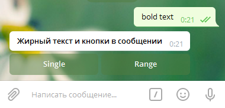

Вернуться --------------------------------------------------------------------------------const Telegraf = require('telegraf'); const Extra = require('telegraf/extra'); const Markup = require('telegraf/markup'); const bot = new Telegraf(process.env.BOT_TOKEN); // Выводит все сообщения в консоль bot.use(Telegraf.log()); // Слушатель строки "test" bot.hears('test', function(ctx) { ctx.reply('Строка "test"'); }); // Слушатель комманды "/test" bot.command('test', function(ctx) { ctx.reply('Команда "/test"'); }); bot.command('onetime', function(ctx) { reply('One time keyboard', Markup .keyboard(['/simple', '/inline', '/pyramid']) // Убрать клавиатуру после нажатия // на любую кнопку по клавиатуре .oneTime() // По умолчанию кнопки расстягиваются на весь экран(на всю доступную область) // Если добавить ".resize()", то кнопки будут сжаты до минимальных размеров .resize() // ... .extra() ); }); bot.launch();-------------------------------------------------------------------------------- # Жирный текст и кнопки в сообщении --------------------------------------------------------------------------------//-------------------------------------------------------------------------------------------------- const Telegraf = require('telegraf'); const Extra = require('telegraf/extra'); const Markup = require('telegraf/markup'); const bot = new Telegraf(process.env.BOT_TOKEN); /*-------------------------------------------------------------------------------------------------- | | -> Консоль | |-------------------------------------------------------------------------------------------------*/ // Выводит все сообщения в консоль bot.use(Telegraf.log()); /*-------------------------------------------------------------------------------------------------- | | -> Слушатели | |-------------------------------------------------------------------------------------------------*/ // Слушатель строки "test" bot.hears('test', function(ctx) { ctx.reply('Строка "test"'); }); // Слушатель комманды "/test" bot.command('test', function(ctx) { ctx.reply('Команда "/test"'); }); /*-------------------------------------------------------------------------------------------------- | | -> Отправка сообщений | |-------------------------------------------------------------------------------------------------*/ // Простой текст bot.hears('sample1', function(ctx) { return ctx.reply('Простой текст!'); }); // Стилизованный текст bot.hears('sample2', function(ctx) { return ctx.replyWithHTML([ '<b>Жирный</b>', '<i>Курсив</i>', '<u>Подчеркнутый</u>', '<s>Зачеркнутый</s>', '<a href="http://www.example.com/">URL ссылка</a>', '<a href="tg://user?id=123456789">Ссылка на пользователя в Телеграм</a>', '<code>inline fixed-width code</code>', '<pre>pre-formatted fixed-width code block</pre>' ].join('\n')); }); // Пустое сообщение bot.hears('sample3', function(ctx) { return ctx.reply(String.fromCodePoint(4448)); }); /*-------------------------------------------------------------------------------------------------- | | -> Редактирование сообщений | |-------------------------------------------------------------------------------------------------*/ // Изменить отправленное сообщение bot.hears('sample4', function(ctx) { return ctx.reply('Ответ на sample4!').then(function({ message_id }) { // Изменяем сообщение "Ответ на sample4!" setTimeout(function() { ctx.telegram.editMessageText(ctx.chat.id, message_id, message_id, 'Сообщение изменено!'); }, 1000 * 2); }); }); /*-------------------------------------------------------------------------------------------------- | | -> Удаление сообщений | |-------------------------------------------------------------------------------------------------*/ // Удалить присланное сообщение bot.hears('sample5', function(ctx) { return ctx.reply('Ваше сообщение "sample5" удалено!').then(function() { // Удаляем сообщение "sample5" ctx.deleteMessage(); }); }); // Удалить присланное и отправленное сообщение bot.hears('sample6', function(ctx) { return ctx.reply('Ответ на sample6!').then(function({ message_id }) { // Удаляем сообщение "sample6" setTimeout(function() { ctx.deleteMessage(ctx.message_id); }, 1000 * 1); // Удаляем сообщение "Ответ на sample6!" setTimeout(function() { ctx.deleteMessage(message_id); }, 1000 * 2); }); }); /*-------------------------------------------------------------------------------------------------- | | -> Простая клавиатура | |-------------------------------------------------------------------------------------------------*/ // Простая клавиатура bot.hears('sample7', function(ctx) { return ctx.reply('Пример простой клавиатуры!', Markup .keyboard(['Кнопка #1', 'Кнопка #2']) .extra() ); }); // Горизонтальная клавиатура bot.hears('sample8', function(ctx) { return ctx.reply('Пример горизонтальной клавиатуры!', Markup .keyboard([['Кнопка #1', 'Кнопка #2']]) .extra() ); }); // Сжатая клавиатура bot.hears('sample9', function(ctx) { return ctx.reply('Пример сжатой клавиатуры!', Markup .keyboard(['Кнопка #1', 'Кнопка #2']) // По умолчанию кнопки расстягиваются на весь экран(на всю доступную область) // Если добавить ".resize()", то кнопки будут сжаты до минимальных размеров .resize()// Сжимаем кнопки .extra() ); }); // Скрыть клавиатуру после клика bot.hears('sample10', function(ctx) { return ctx.reply('Скрыть клавиатуру после клика!', Markup .keyboard(['Кнопка #1', 'Кнопка #2']) .oneTime()// Скрываем клавиатуру после клика .extra() ); }); // Управление рядами клавиатуры bot.hears('sample11', function(ctx) { return ctx.reply('Пример как можно управлять рядами клавиатуры!', Markup .keyboard([ // Ряд 1 ['Кнопка #1', 'Кнопка #2', 'Кнопка #3'], // Ряд 2 ['Кнопка #4'], // Ряд 3 ['Кнопка #5', 'Кнопка #6', 'Кнопка #7', 'Кнопка #8'] ]) .extra() ); }); /*-------------------------------------------------------------------------------------------------- | | -> Встроенная клавиатура | |-------------------------------------------------------------------------------------------------*/ // Простая встроенная клавиатура bot.hears('sample12', function(ctx) { return ctx.reply('Пример встроенной клавиатуры!', Extra.markup(function(m) { return m.inlineKeyboard([ m.callbackButton('Кнопка #1', 'butt_1'), m.callbackButton('Кнопка #2', 'butt_2'), m.callbackButton('Кнопка #3', 'butt_3') ]); })); }); //-------------------------------------------------------------------------------------------------- bot.launch(); //--------------------------------------------------------------------------------------------------